Galería de Max Verstappen
Momentos icónicos, monoplazas, victorias y más.
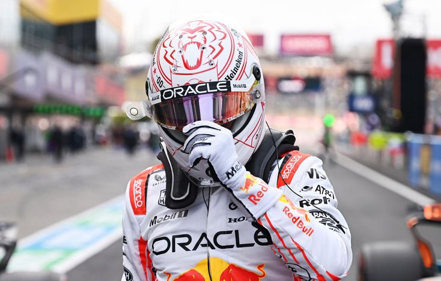
En pista
Max Verstappen al ataque con su monoplaza.
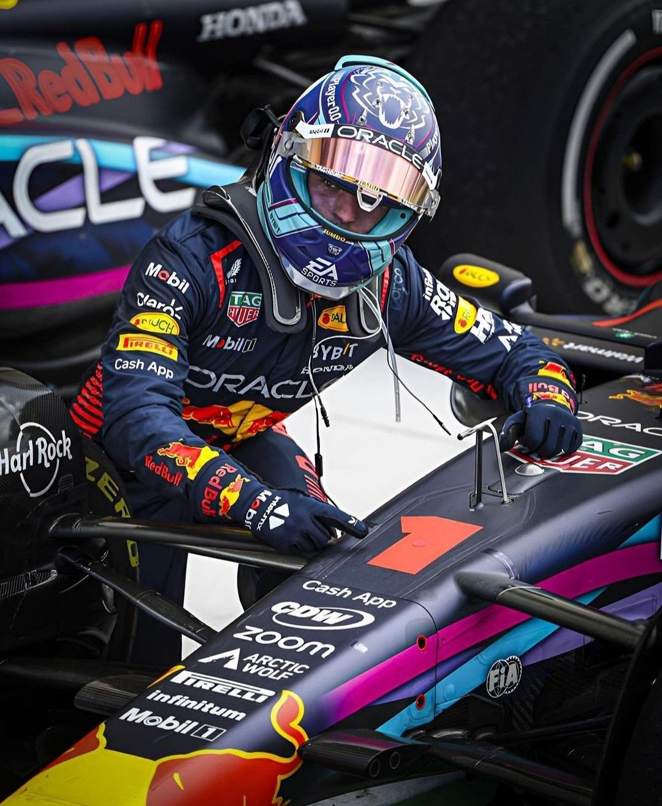
Celebración
Festejo tras una gran actuación.

Simply Lovely
El casco y la frase icónica de Max.
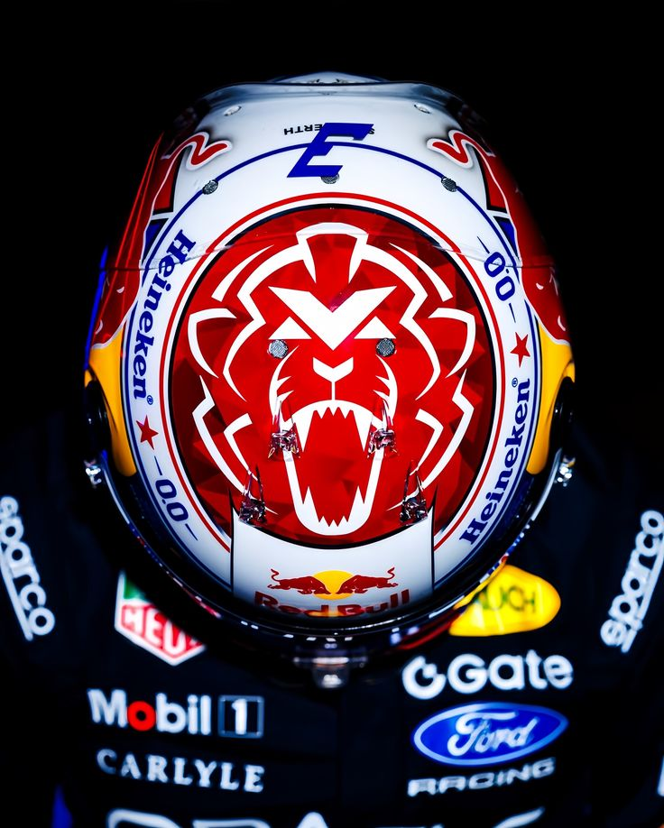
Casco
Diseño y personalidad en el casco.

Red Bull Racing
El equipo de su era en la Fórmula 1.
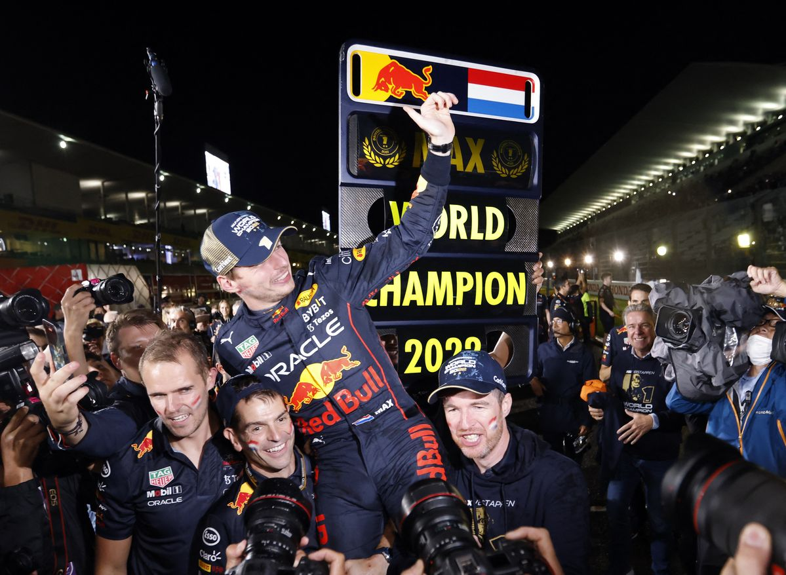
Trabajo en equipo
Max junto al equipo en el paddock.
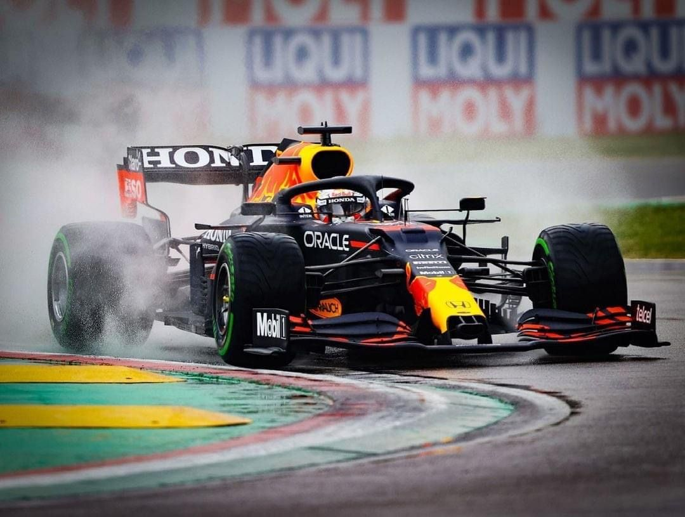
Imola
Ritmo y precisión en pista.
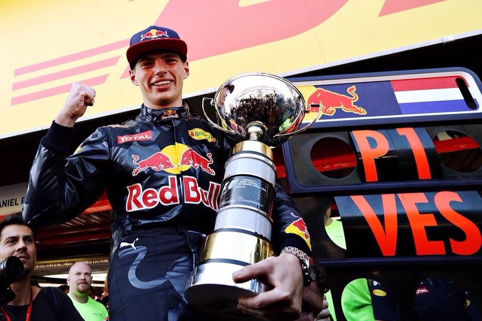
España 2016
Primera victoria histórica con Red Bull.
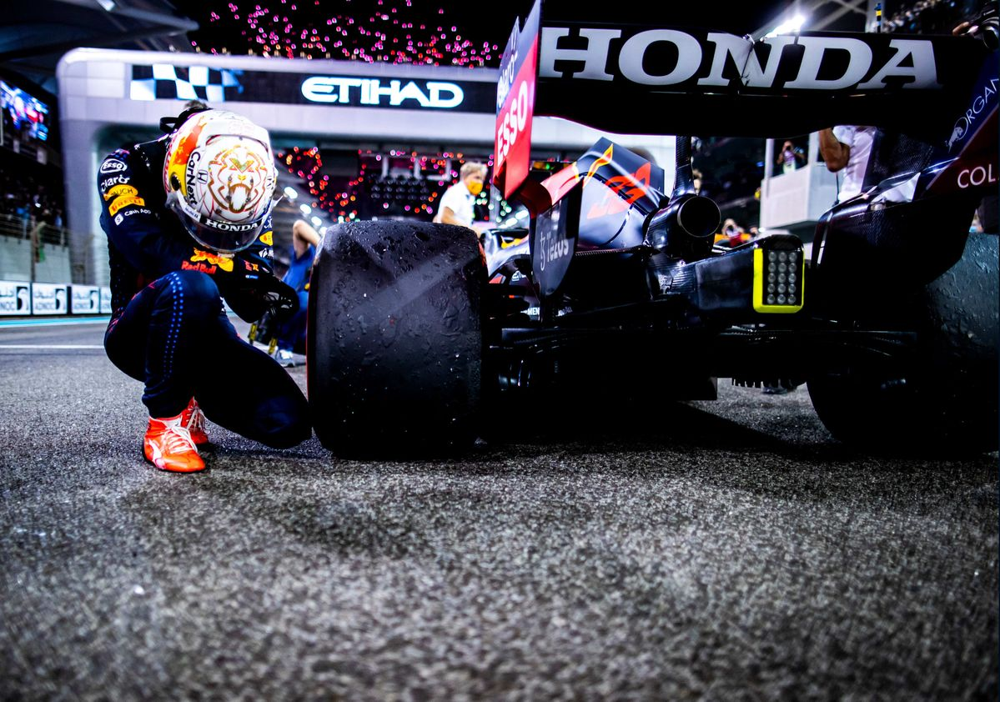
Campeón 2021
La consagración de su primer título mundial.
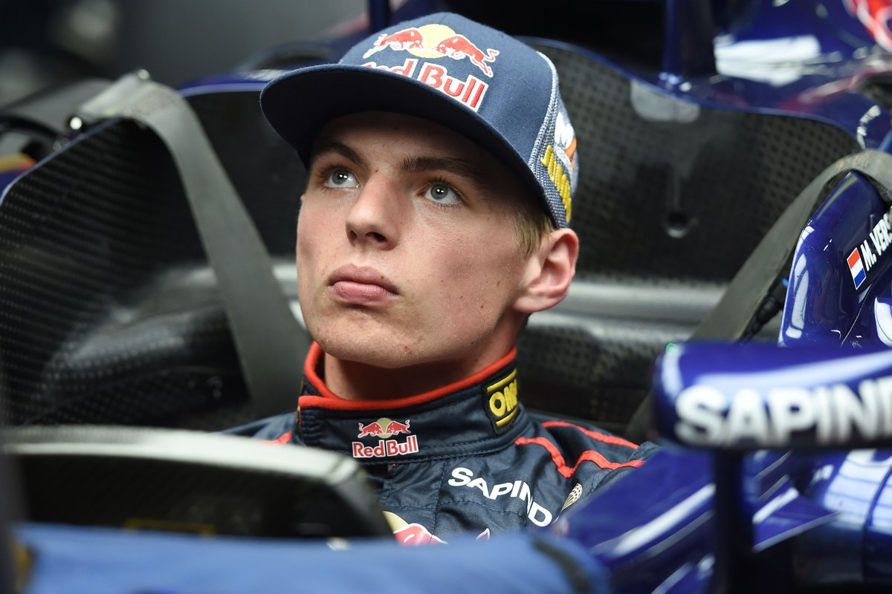
Debut 2015
El inicio de su carrera en Fórmula 1.
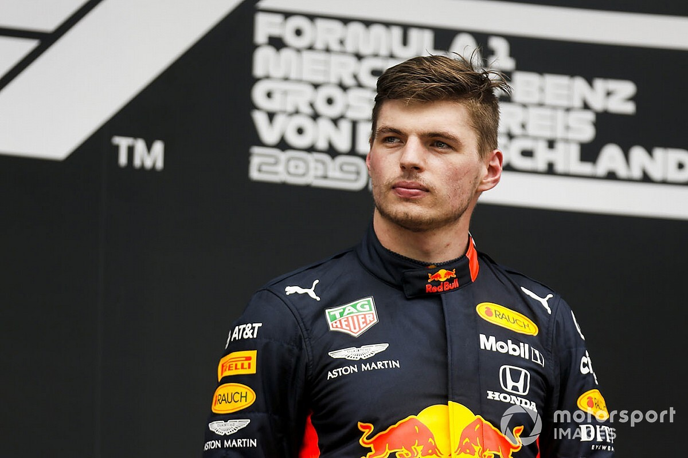
2016–2020
Años de crecimiento y consolidación.
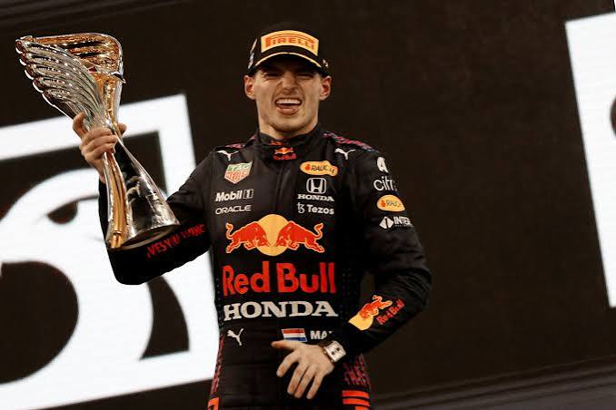
2021
La batalla por el primer campeonato.
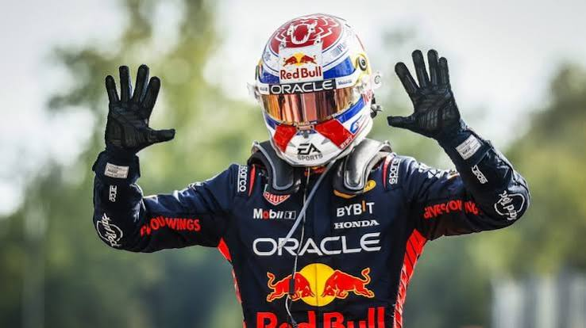
2022–2024
Etapa de dominación absoluta.

2025
Remontada y pelea hasta el final.
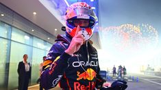
2025 en acción
Otra imagen de la temporada 2025.
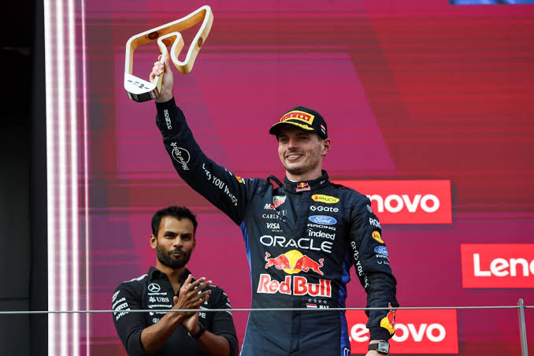
2026
Pelea por el subcampeonato.
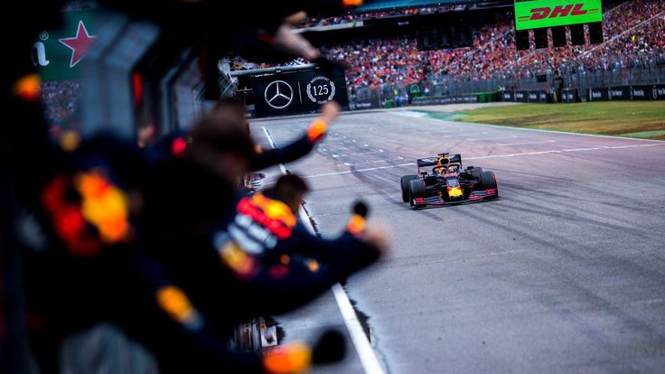
En la pista
Velocidad y enfoque en carrera.
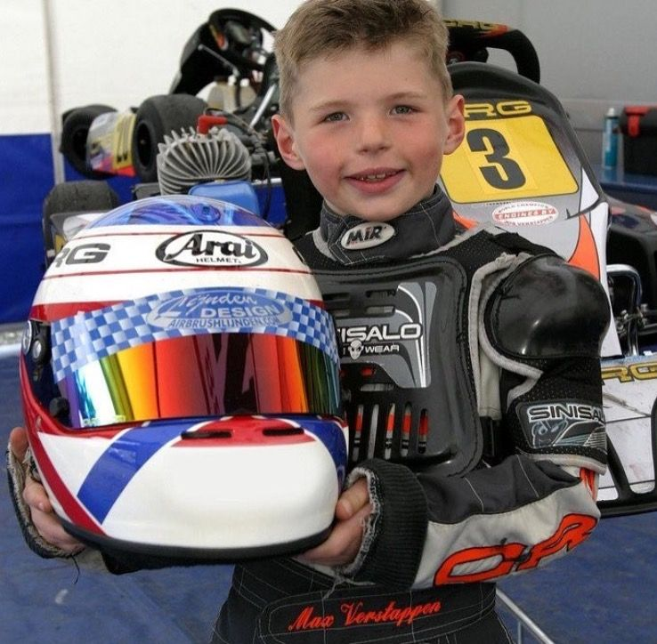
Inicios
Los primeros pasos en el karting.